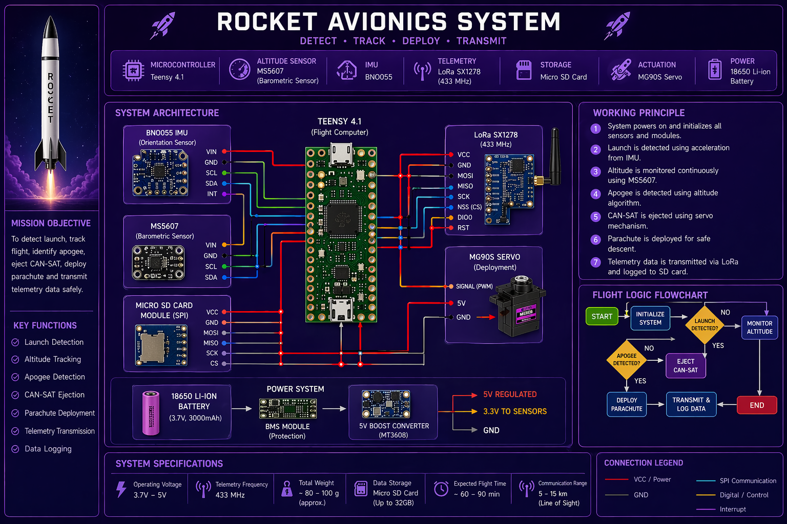
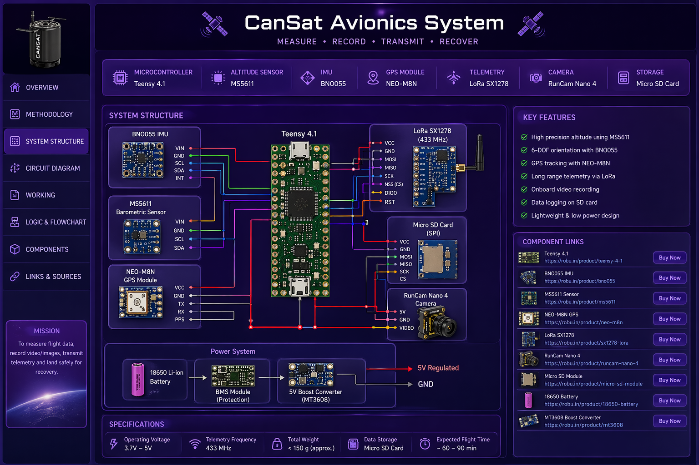

🚀 AVIONICS SYSTEM PRESENTATION
🚀 ROCKET AVIONICS
Methodology
- Detect launch using sensors
- Track altitude continuously
- Identify apogee
- Trigger CAN-SAT separation
- Deploy parachute
- Transmit telemetry (Channel 1)
System Structure
- Teensy 4.1 Microcontroller
- BNO055 (Orientation)
- BMP388 (Altitude)
- LoRa SX1278 (Communication)
- Servo (Deployment)
- SD Card (Data Logging)
- Battery + Power System
Working Principle
- System starts in idle mode
- Launch detected via acceleration
- Altitude increases → ascent phase
- Peak detected → apogee
- Servo activates → eject CAN-SAT
- Parachute deployed
- Data transmitted + stored
Circuit Diagram

Flowchart Logic
- BOOT → Initialize sensors
- WAIT → Launch detection
- ASCENT → Monitor altitude
- APOGEE → Trigger deployment
- DESCENT → Send telemetry
- LAND → Stop system
🛰️ CAN-SAT AVIONICS
Methodology
- Operate independently after separation
- Measure flight data
- Capture video
- Transmit telemetry (Channel 2)
- Log all data
- Land safely
System Structure
- Teensy 4.1 Microcontroller
- BNO055 IMU
- BMP388 Altimeter
- GPS Module (NEO-6M)
- LoRa SX1278
- Camera (RunCam Nano)
- SD Card Storage
- Battery System
Working Principle
- Activated before launch
- Remains passive during ascent
- Separates at apogee
- Starts independent operation
- Records data + video
- Transmits telemetry
- Descends via parachute
Circuit Diagram

Flowchart Logic
- BOOT → Initialize system
- WAIT → Launch phase
- SEPARATION → Activate full system
- DATA COLLECTION → Sensors + Camera
- TRANSMIT → Send telemetry
- LAND → End mission